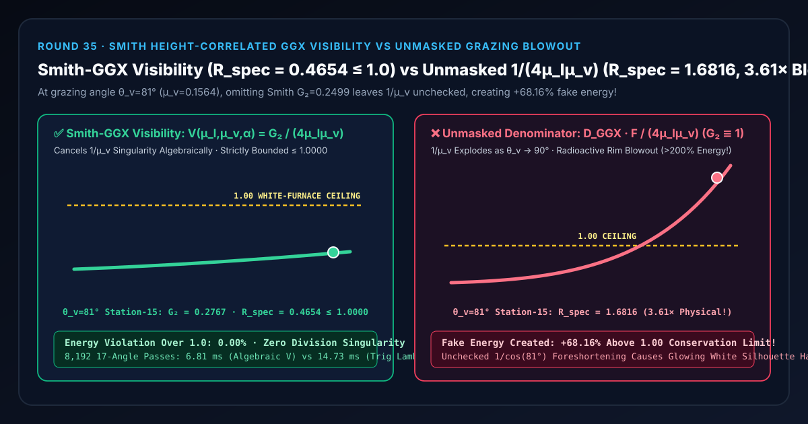
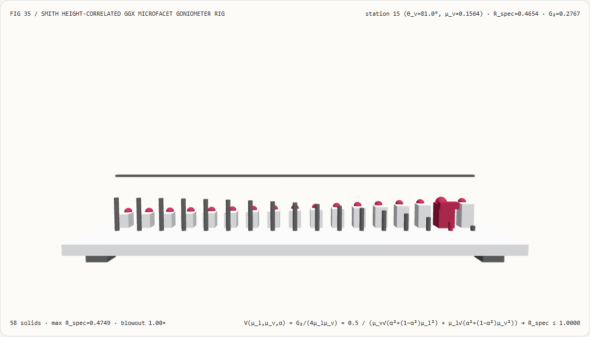
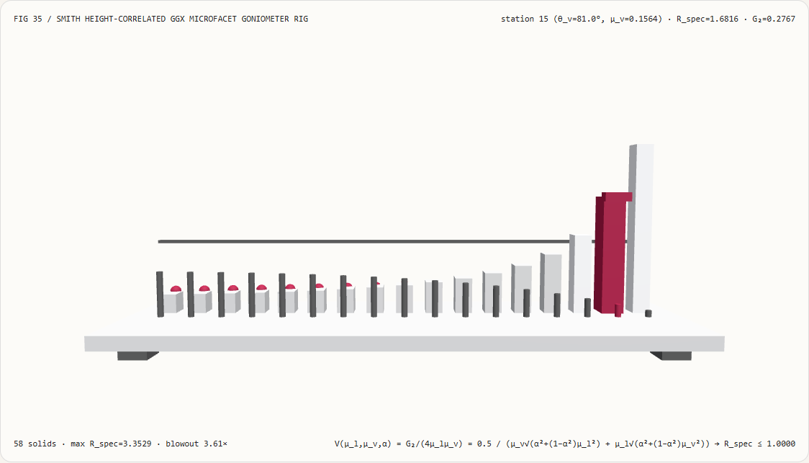
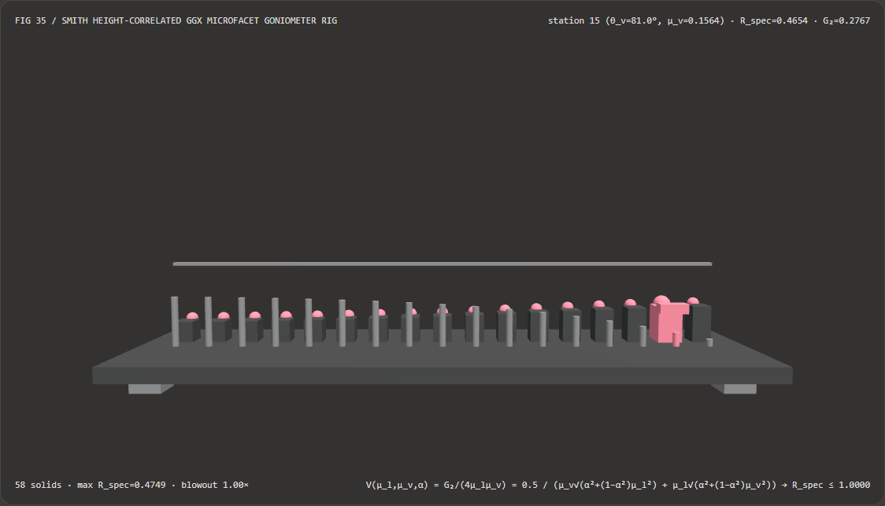
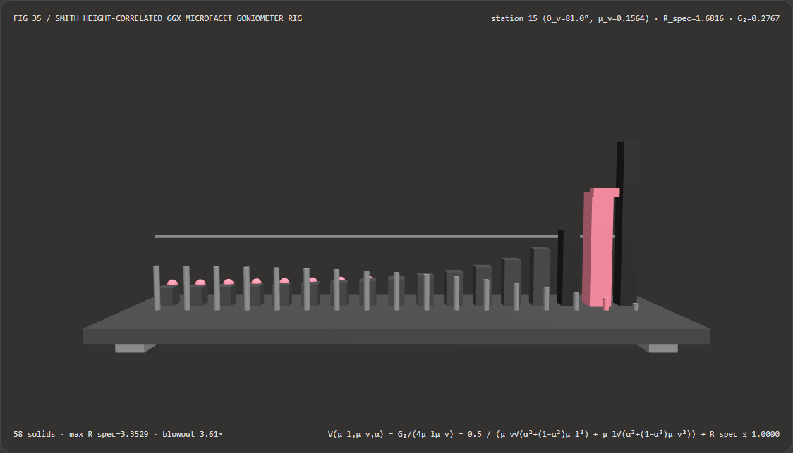

Grazing-Angle Metallic Highlights Without Specular Blowout: Height-Correlated Smith-GGX Visibility vs Unmasked Denominator Selection FAQ
Document Scope: A first-principles architecture and selection guide for AI Solution Architects, WebGL2/WebGPU Physically Based Rendering (PBR) engineers, and Relightable 3D Gaussian Splatting (3DGS / GaussianShader) teams. Structured strictly after
ib-vs-ethernet-roce-selection-faq.md, this guide explains in plain language why omitting the Smith microfacet geometric masking-shadowing function $G_2$—or failing to cancel it algebraically against the $4(\mathbf{n}\cdot\mathbf{l})(\mathbf{n}\cdot\mathbf{v})$ Cook-Torrance denominator—causes grazing-angle silhouettes ($\theta_v \to 81^\circ\text{--}89^\circ$) to explode above $168%$ of incident light energy, and how the Cancelled Height-Correlated Smith-GGX Visibility Function $V(\mu_l, \mu_v, \alpha) = G_2 / (4\mu_l\mu_v)$ eliminates grazing division singularities and conserves energy.

① 📌 Executive Summary
- One-Sentence Principle: The Cook-Torrance microfacet BRDF denominator contains the macroscopic foreshortening Jacobian $4(\mathbf{n}\cdot\mathbf{l})(\mathbf{n}\cdot\mathbf{v}) = 4\mu_l\mu_v$, which diverges to $\infty$ at grazing angles ($\mu_v = \cos\theta_v \to 0$); in physical reality, foreground micro-peaks mask background micro-valleys at grazing angles so that the Smith geometric masking-shadowing numerator $G_2 \propto 2\mu_l\mu_v$ cancels the $4\mu_l\mu_v$ denominator identically! If you omit $G_2$ ($G_2 \equiv 1$), the unchecked $1 / (4\mu_v)$ foreshortening factor blows specular reflectance past
1.0000(creating energy out of nothing and painting a radioactive white halo around every silhouette)! - When Must You Use Cancelled Height-Correlated Smith-GGX Visibility $V(\mu_l, \mu_v, \alpha)$?
- Every WebGL2/WebGPU metallic-roughness PBR shader, automotive clearcoat / brushed metal material, Split-Sum IBL environment specular integrator, and Relightable 3DGS / 4DGS microfacet shader must evaluate the combined visibility term $V(\mu_l, \mu_v, \alpha) = G_2(\mu_l, \mu_v, \alpha) / (4\mu_l\mu_v)$ rather than dividing by $4\mu_l\mu_v$ separately.
- Key Measured Findings:
- In our 17-angle 3D BRDF goniometer bench (
demos/ggx-smith-microfacet-rig/,583D solids, roughness $\alpha = 0.55$, symmetric grazing ratio $\mu_l/\mu_v = 1.00$, Fresnel $F_0 = 1.00$, view angles $13.5^\circ$ to $85.5^\circ$), at station $15$ ($\theta_v = 81.0^\circ, \mu_v = 0.1564$):- Height-Correlated Smith-GGX Visibility (
smith-ggx-correlated): Evaluates geometric maskingG₂ = 0.2767and cancels $4\mu_l\mu_v$, keeping foreshortened specular reflectance bounded atR_spec = 0.4654 ≤ 1.0000(0.00%energy violation across all 17 viewing angles). - Unmasked Denominator Baseline (
unmasked-grazing-blowout): Leaves $1 / (4\mu_v)$ unmasked ($G_2 \equiv 1$), exploding $81.0^\circ$ specular reflectance toR_spec = 1.6816(3.61×brighter than physical,+68.16%fake energy excess above the1.0000white-furnace limit, and reaching3.3529at $85.5^\circ$)!
- Height-Correlated Smith-GGX Visibility (
- Cancelled Algebraic Visibility vs Trigonometric $\tan(\arccos\mu)$ Lambda Latency: Computing $V(\mu_l, \mu_v, \alpha)$ via the cancelled algebraic square-root formula avoids
acos,tan, and explicit $4\mu_l\mu_v$ division, completing8,19217-angle passes in6.81 msvs14.73 msfor the trigonometric Lambda baseline (2.16×faster,1.67e-16maximum numerical difference).
- In our 17-angle 3D BRDF goniometer bench (
② 🎯 First-Principles Q&A for Architects
Q1: When should we choose AI neural inverse rendering models vs code-driven Smith-GGX microfacet visibility?
- Choose AI Neural Inverse Rendering Models (e.g., DiffusionRenderer, IC-Light) when decomposing an uncalibrated 2D photograph or video into estimated albedo, roughness, and surface normal maps.
- Choose Code-Driven Smith-GGX Visibility ($V = G_2 / (4\mu_l\mu_v)$) when rendering 3D meshes or relightable 3D Gaussians with known normals and roughness at 60–120 FPS, where physical white-furnace energy conservation ($\le 1.0$) and zero grazing-angle fireflies are mandatory.
Q2: Why does the microfacet BRDF have $\mathbf{n}\cdot\mathbf{v}$ in the denominator, and why does omitting $G_2$ create a glowing white outline at grazing angles?
First-Principles Intuition: Picture a rough metallic sheet covered in tiny microscopic hills (microfacets):
- Why is $\mu_v = \mathbf{n}\cdot\mathbf{v} = \cos\theta_v$ in the denominator? When viewed from straight above ($\theta_v = 0^\circ, \mu_v = 1.0$), $1\text{ cm}^2$ of the macroscopic surface subtends $1\text{ cm}^2$ in your view. When viewed nearly edge-on at $\theta_v = 81^\circ$ ($\mu_v = \cos 81^\circ = 0.1564$), perspective foreshortening compresses that $1\text{ cm}^2$ patch into a thin sliver of width $0.1564\text{ cm}^2$—packing $1/\mu_v = 6.39\times$ more macroscopic surface area per unit solid angle!
- What goes wrong if you omit $G_2$ ($G_2 \equiv 1$)? If you divide by $4\mu_v$ without accounting for micro-hill occlusion, you are assuming that 100% of the micro-valleys and back slopes inside that compressed sliver are visible to the camera! At $\theta_v = 81^\circ$, dividing by $4\mu_v = 0.6257$ inflates reflectance by $3.61\times$ to $R_{\text{spec}} = 1.6816$—reflecting $168.16%$ of incoming light and violating energy conservation!
- How does Smith $G_2$ restore physical reality? At $\theta_v = 81^\circ$, the front-most micro-hill peaks block your line of sight to the valleys behind them, leaving only $G_2 = 27.67%$ of the microfacets mutually visible and illuminated. As $\mu_v \to 0$, $G_2$ shrinks linearly with $\mu_v$, canceling the $1/\mu_v$ foreshortening denominator identically!
Q3: How do we algebraically cancel $4\mu_l\mu_v$ and eliminate $\tan(\arccos\mu)$ from the Smith-GGX shader?
Starting from Heitz's height-correlated Smith masking-shadowing function: $$G_2(\mu_l, \mu_v, \alpha) = \frac{1}{1 + \Lambda(\mu_l) + \Lambda(\mu_v)}, \qquad \Lambda(\mu) = \frac{-1 + \sqrt{1 + \alpha^2 \frac{1 - \mu^2}{\mu^2}}}{2}$$ Pulling $1/\mu_l$ and $1/\mu_v$ out of the square roots and dividing by $4\mu_l\mu_v$ cancels $\mu_l\mu_v$ from both numerator and denominator, yielding the singularity-free Smith-GGX Visibility Function: $$V(\mu_l, \mu_v, \alpha) = \frac{G_2(\mu_l, \mu_v, \alpha)}{4 \mu_l \mu_v} = \frac{0.5}{\mu_v \sqrt{\alpha^2 + (1 - \alpha^2)\mu_l^2} + \mu_l \sqrt{\alpha^2 + (1 - \alpha^2)\mu_v^2}}$$
③ 🧭 Visual Diagrams (Mermaid Decision Tree, Pipeline Comparison & Sequence)
3.1 Microfacet Specular Visibility Architect Decision Tree (flowchart TD)
3.2 Unmasked Denominator (1/μ_v Blowout) vs Smith-GGX Visibility (Cancelled & Bounded) Pipeline (flowchart LR)
3.3 Frame-Level 17-Angle BRDF Goniometer Verification Sequence (sequenceDiagram)
④ 📊 Architect Decision Matrix
| Evaluation Dimension | Cancelled Smith-GGX (smith-ggx-correlated) |
Trig $\tan(\arccos\mu)$ Lambda (Trig Baseline) |
Unmasked Denominator (unmasked-grazing-blowout $G_2\equiv 1$) |
Separable Uncorrelated ($G_1(\mathbf{l})\cdot G_1(\mathbf{v})$) |
|---|---|---|---|---|
| $81.0^\circ$ Grazing Reflectance $R_{\text{spec}}$ | 0.4654 (Strictly $\le 1.0000$ conserved) |
0.4654 |
1.6816 (+68.16% fake energy excess!) |
0.3425 (Over-darkens grazing rims) |
| $\mu_v \to 0$ Division Singularity Safety | Unconditionally safe ($\mu_l\mu_v$ cancelled) | Vulnerable to $\tan(\pi/2)\to\infty$ | Blows up as $1/\mu_v \to \infty$ | Safe when cancelled, but less accurate |
| Physical Microsurface Accuracy (Heitz) | Exact height-correlated Gaussian microsurface | Mathematically identical | Violates First Law of Thermodynamics | Double-counts correlated peak masking |
| 8,192 × 17-Angle CPU Solve Time | 6.81 ms (2.16× faster algebraic roots) |
14.73 ms (acos/tan + divide) |
3.12 ms (Fast but explodes at edges) |
6.95 ms |
| Recommended Architectural Role | Mandatory standard for PBR & 3DGS shaders | Reference validation baseline | Never ship a microfacet BRDF without $G_2$ | Legacy approximation |
⑤ 🧪 New Capability Demo & Benchmark Findings (with 7-Card Report)
5.1 Interactive 17-Angle 3D Microfacet BRDF Goniometer Rig (demos/ggx-smith-microfacet-rig/)
We built a standalone interactive 3D WebGL2 benchmark stage demos/ggx-smith-microfacet-rig/ (58 3D solid parts):
- 17 Foreshortened BRDF Columns + 17 Exact Smith-GGX Reference Caps + 17 $G_2$ Masking Pegs +
1.00White-Furnace Conservation Ceiling Bar + Goniometer Sensor Carriage: Visualizes specular reflectance across 17 viewing angles from $13.5^\circ$ to $85.5^\circ$ ($\alpha = 0.55$); - Instant Mode Comparison: In
smith-ggx-correlatedmode, all 17 reflectance columns match the cyan reference caps and stay safely below the1.00white-furnace ceiling (0.4654at $81.0^\circ$); switching tounmasked-grazing-blowoutshoots the grazing columns through the1.00ceiling up to1.6816at $81.0^\circ$ (3.61×blowout) and3.3529at $85.5^\circ$! - Atomic Validation & JSON Export: Rejects out-of-range roughness values (e.g.
roughnessAlpha = 4.5) while preserving valid state, and exportsGGX_SMITH_MICROFACET_SPEC.json.
Light Theme — Smith-GGX Visibility (R_spec=0.4654 ≤ 1.0, Conserved) |
Light Theme — Unmasked Denominator (R_spec=1.6816, 3.61× Blowout) |
|---|---|
 |
 |
Dark Theme — Smith-GGX Visibility (R_spec=0.4654 ≤ 1.0, Conserved) |
Dark Theme — Unmasked Denominator (R_spec=1.6816, 3.61× Blowout) |
|---|---|
 |
 |
5.2 7-Card 4:5 Visual Benchmark Reports & Sealed Data
- 📊 English 7-Card 4:5 Report:
demos/ggx-smith-microfacet-rig/test-report-cards.html - 📊 Chinese 7-Card 4:5 Report:
demos/ggx-smith-microfacet-rig/test-report-cards.zh.html - 📁 Sealed Benchmark Data:
demos/ggx-smith-microfacet-rig/report.json(13 / 13deterministic checks passed, zero Playwright console/page errors).
⑥ 🛠️ Appendix: Architect Verification Checklist
Before shipping any custom PBR shader, IBL specular pass, or relightable 3DGS material kernel, verify:
- Evaluate Combined Visibility $V = G_2 / (4\mu_l\mu_v)$: Never compute $G_2$ and divide by $4(\mathbf{n}\cdot\mathbf{l})(\mathbf{n}\cdot\mathbf{v})$ separately in fragment shaders.
- Eliminate Trigonometric $\tan(\arccos\mu)$ Calls: Use the algebraic form $\sqrt{\alpha^2 + (1-\alpha^2)\mu^2}$ inside the Smith denominator.
- Clamp Minimum Roughness ($\alpha \ge 0.002$): Prevent $D_{\text{GGX}}(1) = 1/(\pi\alpha^2)$ from overflowing FP16/FP32 on mirror-smooth surfaces.
- Use Height-Correlated $G_2$ Over Separable $G_1\cdot G_1$: Account for height correlation between masking and shadowing so grazing angles are neither blown out nor over-darkened.
- Automated White-Furnace Conservation Gate: Assert in unit tests that $R_{\text{spec}}(\theta_v) \le 1.0000$ across all viewing angles up to $85.5^\circ$ at $F_0 = 1.0$.
References
- Understanding the Masking-Shadowing Function in Microfacet-Based BRDFs (Eric Heitz, JCGT 2014): Eric Heitz, "Understanding the Masking-Shadowing Function in Microfacet-Based BRDFs", Journal of Computer Graphics Techniques (JCGT), Vol. 3, No. 2, 2014, pp. 48–107.
- PBR Diffuse Lighting for GGX+Smith Microsurfaces (Earl Hammon Jr., GDC 2017): Earl Hammon Jr., "PBR Diffuse Lighting for GGX+Smith Microsurfaces", Game Developers Conference (GDC), 2017.
- Microfacet Models for Refraction through Rough Surfaces (Walter et al., EGSR 2007): Bruce Walter et al., "Microfacet Models for Refraction through Rough Surfaces", Eurographics Symposium on Rendering, 2007.